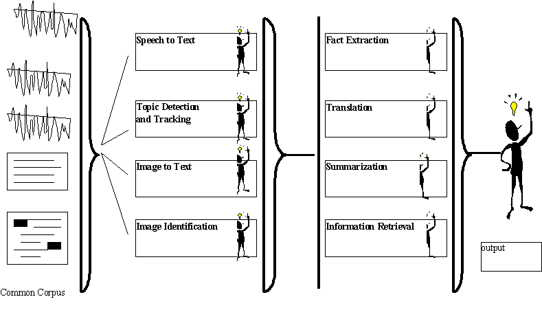

Report: Panel on Performance Measurement of Human-Centered Systems
Organizer & Chair: Jean Scholtz, National Institute of Standards and Technology
| Panelists: | Donna Harman, Sharon Laskowski, National Institute of Standards and Technology |
| Catherine Plaisant, University of Maryland | |
| B.H. Juang, Bell Labs |
This panel presented the need for additional measures of performance for evaluating progress in interactive systems. The potential benefit of such measurement tools and techniques has been recognized in numerous domains including visualization, digital libraries, and computer supported cooperative work (CSCW). The summaries from the previous workshop on human-centered systems contained many references on this subject.
Currently, researchers at the National Institute of Standards and Technology (NIST) have developed methodologies and test corpora to evaluate algorithms for well-defined problems. In the information retrieval domain, we use the measures of precision and recall to compare search engines. Researchers come to the Defense Advanced Research Projects Agency (DARPA) sponsored Text REtrieval Conference (TREC ) to compare the performance of their search engines. The search engines are run on the NIST test corpora using predetermined queries. The results obtained by each search engine then are merged and human analysts at NIST performance relevance judgements. Graphs of performance measures over the past five years that the conference has run show improvements in performance of search engines. New tracks have been added to the basic tasks; these include information retrieval in foreign language, spoken document retrieval, and interactive information retrieval. The heavy participation in the tracks indicates that interest is progressing beyond performance measurements of algorithms alone. Researchers are now also interested in looking at performance measurements of component interaction - e.g. speech recognition (SR) and information retrieval (IR). In addition, researchers are also interested in performance measurements of interactive systems.
The Spoken Document Retrieval track involves the retrieval of excerpts of recordings of Radio and TV broadcasts using a combination of speech recognition and information retrieval techniques. The Track has facilitated collaboration between the speech recognition and IR communities and it has shown that relatively good Spoken Document Retrieval performance is achievable using current SR and IR technologies. NIST provided the Broadcast News speech corpora, test protocols and queries for the SDR test this year as well as baseline recognition output (contributed by IBM) and human-generated transcriptions provided by the Linguistics Data Consortium. Contrast tests were performed using the transcripts and enabled evaluation of the component technologies as well as overall performance of Spoken Document Retrieval.
Many questions still remain on how and what to measure for interactive information retrieval systems. Currently real users are used to test the systems. While this does constitute the ultimate test, it also raises many issues including comparison of skills of users, standardization of test situations, amount of training given, help given, and time allotted for the evaluation. This raises the question of whether user modeling techniques might be sufficient for evaluation efforts.
Researchers at NIST in the spoken language group use the metrics of error rate for word recognition. They have developed many test corpora used by the Automatic Speech Recognition community (ASR). NIST works closely with researchers, other government agencies (such as the Defense Advanced Research Projects Agency), and the Linguistics Data Consortium in the collection, processing, characterization, and distribution of spoken language corpora. Approximately 150 CD-ROMs have been produced by NIST for use within the ASR and spoken language research community. NIST also develops and implements periodic benchmark tests to define the state of the art for research ASR systems. The scope of these tests includes several forms of large vocabulary continuous speech, including speech read from prepared texts, conversational speech, goal-directed spontaneous speech, and, most recently, radio broadcasts.
As mentioned previously, the Spoken Document Retrieval track combines information retrieval technologies and speech recognition technologies. This group is now looking at interactive systems and the identification of metrics and ways to compare the overall effectiveness of systems that allow user interactions. User interactions can be several forms such as users noting errors and typing or re-saying the word so that the system can correct it. Once the recognition component has been evaluated with the users, the next step is to objectively compare the benefits of voice interaction versus graphical interfaces or other novel interaction techniques in the context of controlled test applications.
In the domain of information visualization, researchers are developing novel ways of visualizing information. But what is lacking is a way to evaluate the different visualizations. Helpful metrics in this domain would allow us to characterize visualizations to produce guidelines as to which visualizations should be used in which situations. This implies that the development of a taxonomy and a scenario based evaluation methodology would be useful. A good example of a test case that was discussed by the panelists is that of browsing tree structures. This task is useful in many applications and offers many different visualization techniques to compare.
A scenario -based evaluation methodology has been developed in the DARPA sponsored Intelligent Collaboration and Visualization Program (ICV). Because the ICV research is in computer supported cooperative work, the metrics and test corpora developed are considerably more complex than those for single user systems. In addition to performance metrics for algorithms and single user interactions, metrics here must also take into consideration user-user interactions, with computer mediation. The Evaluation Working Group (EWG) developed a framework which can be used to classify CSCW systems and also to describe the requirements of the collaborative group, including the tasks they perform, the hardware they have, and the type of social protocols they use. Test data in this case is a set of scenarios and scenario templates. This allows evaluators to easily replicate a test and thereby compare different systems or different versions of the same system. Scenario templates serve as a guide for evaluators who wish to create their own scenarios. The metrics range from performance metrics of different pieces of functionality to metrics of group outcome, group process, and group satisfaction. Functionality metrics, of course, depend on the type of functionality. For example, metrics for a shared workspace might include the number of objects that can be shared, the number of participants who can concurrently share the space, and the time and error rate of basic tasks, such as importing objects and annotating objects.
Researchers agree that having metrics and test corpora for human-computer interactions readily available would increase their ability to perform evaluations. It is extremely time consuming for researchers, not skilled in conducting evaluations, to develop the proper test materials and carryout the evaluations. This work, while viewed as important, is not typically one of the main goals of the researchers because of its difficulty and cost.
While the majority of researchers agree on the benefit of user interaction metrics, the form of these metrics will be one of considerable debate. Current performance metrics are mathematically based. However, it is likely that interdisciplinary studies will be needed to define meaningful metrics for human-computer interactions. It remains to be seen whether these metrics can be formulated mathematically. Don Norman in Things that Make Us Smart says "The things we collect statistics about are primarily those things that are easiest to identify and count or measure - which may have little or no connection with those factors of greatest importance." We must be careful to measure those things that are of value to the humans interacting with our systems. We have yet to identify these factors of importance, but candidates that have been discussed include confidence in the results, satisfaction or frustration, learning issues, and problems with dual-tasking.
Interactive systems must deliver value to users. However, this value is determined by the users. We must understand the criterion for usefulness as judged by the users. Therefore, we must understand how humans determine the usefulness of a system. This criteria must then be used to evaluate and optimize systems. We must determine the dimensions that form the basis for human value judgements. The value of interactive systems must be judged within a context. That is, different tasks will have a different emphasis on the value dimensions. The value of interactive systems will have to be understood and established for each and every intended task. One proposal for a common framework for value dimensions might be: information rate, ease-of-use, accuracy, and service grade.
The panel proposed a possible approach to establishing component interaction metrics and user-interaction metrics:
To better understand this approach, the panel presented an example, using the domain of News Understanding. Figure 1 illustrates the various component interactions. User interactions should be evaluated, not just with the entire system, but with individual components of the system.
In the approach outlined by the panel, NIST would provide the test infrastructure, including test corpora and measurement methodology for component interactions and user interactions. Researchers participating in the various government agency programs would be able to access these evaluation modules. With all researchers using the same domain and selected scenarios, demonstrations of the effectiveness of individual modules would be feasible. This approach should speed technology as the evaluations of component interactions and user-interactions will have been completed during research. This would leave the developers free to concentrate on perfecting the specific implementation of the technology.
